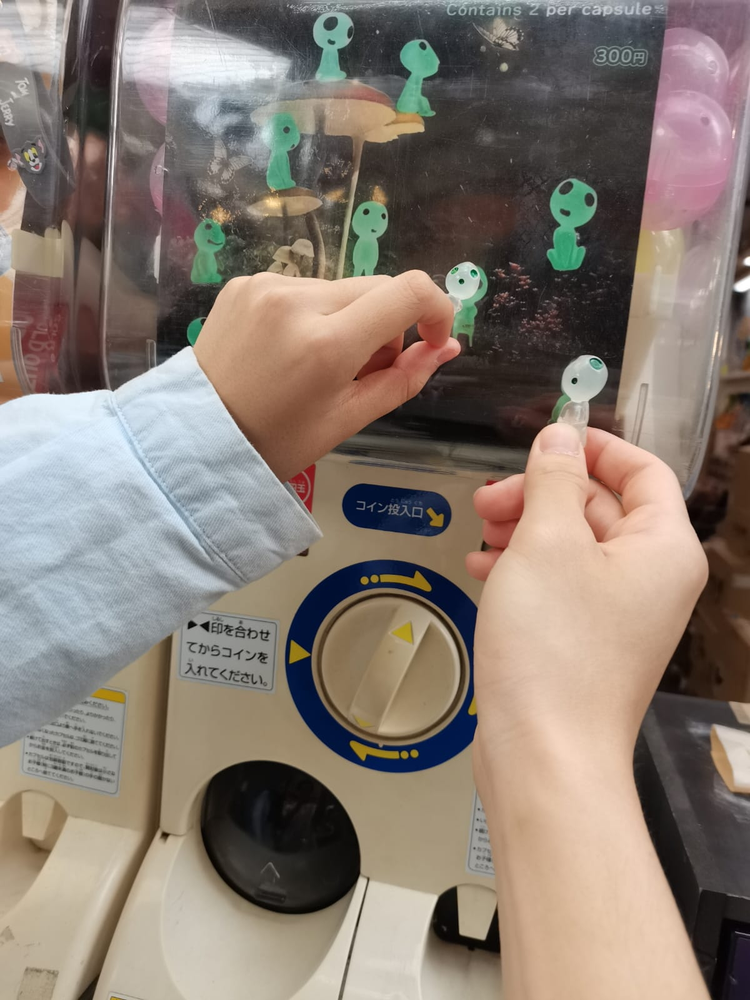

From Osaka to Tokyo
Shopping at Kuromon Market
In the morning, Rita and I went to Kuromon Market to buy souvenirs for friends and have a meal. The market was filled with all kinds of local foods and goods, making it a really interesting place to explore. We enjoyed wandering through the stalls, tasting some specialties, and picking out unique gifts.
Experiencing Archery
In the afternoon, I went to Osaka Tower with Nathan. Unfortunately, we arrived too late and couldn’t go up the tower, but we decided to make the best of it and tried archery at a nearby place instead. It was a fun and unexpected experience, and we ended up having a great time together.
Travelling to Tokyo
In the evening, Nathan and I went to Tokyo to have yakiniku (Japanese BBQ). The restaurant itself was quite interesting, and the staff were extremely friendly and welcoming—very different from the typical image of Tokyo people being reserved. It turned out to be a memorable and enjoyable night.